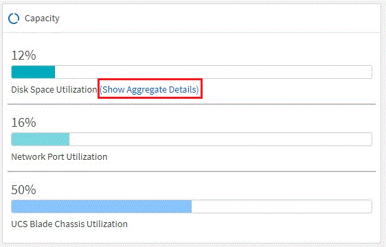

Notas de la versión
Notas de la versión
Archivo de " Novedades en Converged Systems Advisor"
 Sugerir cambios
Sugerir cambios
NetApp actualiza periódicamente Converged Systems Advisor para ofrecerle nuevas funciones, mejoras y correcciones de errores.
Para confirmar que los componentes de FlexPod son compatibles con el agente CSA, consulte "Herramienta de matriz de interoperabilidad de NetApp" (IMT).
Contenido
Este archivo contiene información de las siguientes versiones:
30 de abril de 2020
Esta versión incluye las siguientes mejoras:
Asesor de actualizaciones
Ahora puede comprobar la compatibilidad de las versiones de VMware vCenter y ONTAP con los componentes de Nexus y UCS. Para comprobar la compatibilidad, utilice el Asesor de actualizaciones en la consola de interoperabilidad del firmware. Todas las versiones que vea son compatibles.
Switch de interconexión de clúster
Conmutador de interconexión de clúster se ha añadido en interoperabilidad de firmware en la vista Panel. Ahora puede supervisar la compatibilidad de los switches de interconexión de clúster de ONTAP con los siguientes modelos:
-
Cisco Nexus 3132Q-V
-
Cisco Nexus 3232C
-
Cisco Nexus 92300YC

En el agente, ahora puede agregar un conmutador de interconexión de clúster como un dispositivo en el menú desplegable Agregar información de dispositivo.

Mejoras en la tarjeta de capacidad
También se agregaron los enlaces al uso de puertos de red y al uso de servidores blade UCS para ayudarle a supervisar y ampliar su infraestructura de FlexPod. En la vista Consola, cuando se utiliza capacidad, se muestran dos enlaces nuevos.
La utilización del puerto se vincula a información detallada de las interfaces del nivel de red.
El uso de servidores blade UCS enlaza a información detallada para los blades en el nivel informático.
Alertas de diagramas de sistema
Ahora verá alertas en las vistas del diagrama de su sistema para que pueda supervisar mejor su infraestructura.
3 de febrero de 2020
Esta versión incluye las siguientes mejoras:
Mejoras de navegación
-
Esta versión le permite ver todos sus sistemas en Ver todos los sistemas.
-
Es más fácil ver y navegar por la estructura de los niveles de componentes. Puede utilizar el menú desplegable y las flechas para ver los dispositivos.
-
También es más fácil navegar hacia y desde la vista de la consola (casa) mediante un rastro de ruta de exploración.

Detalles del agregado
En la vista Panel, cuando vaya a capacidad, ahora puede ver un enlace a Detalles de agregado. Puede usar el enlace proporcionado para ver información detallada sobre los agregados en el nivel de almacenamiento.


7 de noviembre de 2019

|
Todas las funciones y mejoras nuevas de esta versión se incluyen automáticamente después de añadir FlexPod a Converged Systems Advisor. Siga las instrucciones de "Primeros pasos" Para añadir su FlexPod como infraestructura convergente en el Asesor de sistemas convergentes. |
Esta versión incluye las siguientes funciones y mejoras nuevas:
Concienciación de MetroCluster
Ahora, el asesor de sistemas convergentes admite añadir un único sitio de MetroCluster FlexPod como infraestructura convergente. El análisis podrá ahora determinar el estado de ambos lados del MetroCluster.
Concienciación de NVMe
El Asesor de sistemas convergentes ahora ejecutará análisis para comprobar la configuración del protocolo NVMe que es compatible con ONTAP 9.4 y versiones posteriores.
Funciones de interoperabilidad mejoradas
Converged Systems Advisor tiene una tarjeta de interoperabilidad actualizada que se enlaza a una ventana emergente que muestra las versiones actuales, más próximas y más recientes compatibles con cada componente. Se ha agregado un nuevo informe en la ventana emergente para mostrar un informe de interoperabilidad individualizado por nivel de componente.
-
Volver a. Contenido
24 de julio de 2019
Esta versión incluye las siguientes funciones y mejoras nuevas:
Compatibilidad con Cisco ACI en FlexPod
Converged Systems Advisor ahora es compatible con los diseños de FlexPod con las redes ACI de Cisco. Se evaluará el soporte y la configuración de todos los dispositivos de su FlexPod, incluso los dos conmutadores de láminas determinados dinámicamente conectados a sus otros dispositivos FlexPod.
Compatibilidad con varios clústeres en una única FlexPod
Converged Systems Advisor ahora admite varios clústeres en una única FlexPod. Las reglas de Storage ONTAP se procesan en todos los clústeres y todos los clústeres se reflejan en el diagrama del sistema.
-
Volver a. Contenido
25 de abril de 2019
Esta versión incluye las siguientes funciones y mejoras nuevas:
Resolución automática de reglas fallidas
Ahora, el asesor de sistemas convergentes puede resolver automáticamente problemas por los que se producen fallos en ciertas reglas. Esta función se activa automáticamente reiniciando el agente.
Mostrar reglas suprimidas
Ahora puede mostrar una lista global de reglas suprimidas en Converged Systems Advisor y volver a activar las alertas para reglas suprimidas de la lista.
Problemas solucionados
Se han resuelto los siguientes problemas conocidos en esta versión:
| ID. De error | Descripción |
|---|---|
Es posible que las imágenes de diagramas del sistema no se muestren para una infraestructura convergente |
|
El valor de eficiencia del clúster de almacenamiento se muestra incorrectamente |
|
Es posible que el estado del puerto del switch Nexus se muestre incorrectamente |
|
El estado de la reserva de espacio se muestra incorrectamente |
-
Volver a. Contenido
28 de marzo de 2019
Se han resuelto los siguientes problemas conocidos en esta versión:
| ID. De error | Descripción |
|---|---|
El estado de Thin Provisioning se muestra incorrectamente en CSA |
|
El porcentaje de utilización de espacio en disco se muestra incorrectamente en CSA |
|
Las interfaces asignadas a la VLAN en el switch Nexus pueden no coincidirán con la salida real del dispositivo en CSA |
|
Es posible que la información del suministro de alimentación de un servidor montado en rack se muestre incorrectamente en CSA |
-
Volver a. Contenido
17 de enero de 2019
Esta versión incluye las siguientes funciones y mejoras nuevas:
Compatibilidad con nuevos dispositivos FlexPod
Converged Systems Advisor ahora admite los siguientes dispositivos FlexPod:
-
Servidores en rack Cisco UCS serie C
-
Switches de la serie Nexus 3000
-
Switches Cisco UCS conectados directamente a controladoras de NetApp
Para obtener una lista completa de los dispositivos compatibles, consulte "Herramienta de matriz de interoperabilidad de NetApp".
Información detallada acerca de hosts y máquinas virtuales
El asesor de sistemas convergentes proporciona ahora más información sobre su entorno de virtualización. Puede consultar información detallada sobre hosts y máquinas virtuales individuales, incluidos diagramas, una lista de inventario y un resumen de reglas.

Experiencia simplificada al añadir una infraestructura
Ahora es más fácil añadir una infraestructura a Converged Systems Advisor. El portal le permite introducir la información paso a paso:

Importación de dispositivos mediante un archivo
Ahora puede configurar el agente de Asesor de sistemas convergentes para descubrir su infraestructura de FlexPod importando un archivo que incluya información sobre cada dispositivo. La importación de los dispositivos es una alternativa a la adición manual de cada dispositivo, uno por uno.

Integración con Active IQ de NetApp
Ahora es posible iniciar Active IQ desde Converged Systems Advisor. En el ejemplo siguiente se muestra un enlace de Active IQ disponible en la página Storage:

Problemas solucionados
Se han resuelto los siguientes problemas conocidos en esta versión:
| ID. De error | Descripción |
|---|---|
4671 |
Es posible que Firefox deje de responder cuando navega por el portal Converged Systems Advisor. |
4500 |
El portal Converged Systems Advisor no cierra la sesión después de que ha caducado el intervalo de tiempo de espera. Permanece conectado, pero no puede ver sus sistemas FlexPod. |
2794 |
Converged Systems Advisor muestra "Pass" para la regla titulada "comprobación de las herramientas de VMware" aunque las herramientas de VMware no estaban instaladas en la máquina virtual. |
-
Volver a. Contenido
13 de septiembre de 2018
Esta versión de Converged Systems Advisor incluye las siguientes nuevas funciones:
-
Una nueva interfaz de usuario y experiencia de usuario para simplificar las operaciones de FlexPod de los clientes
-
Validación del estado y las mejores prácticas para la virtualización de VMware
-
Compatibilidad con switches Cisco MDS con compatibilidad con Fibre Channel ampliada